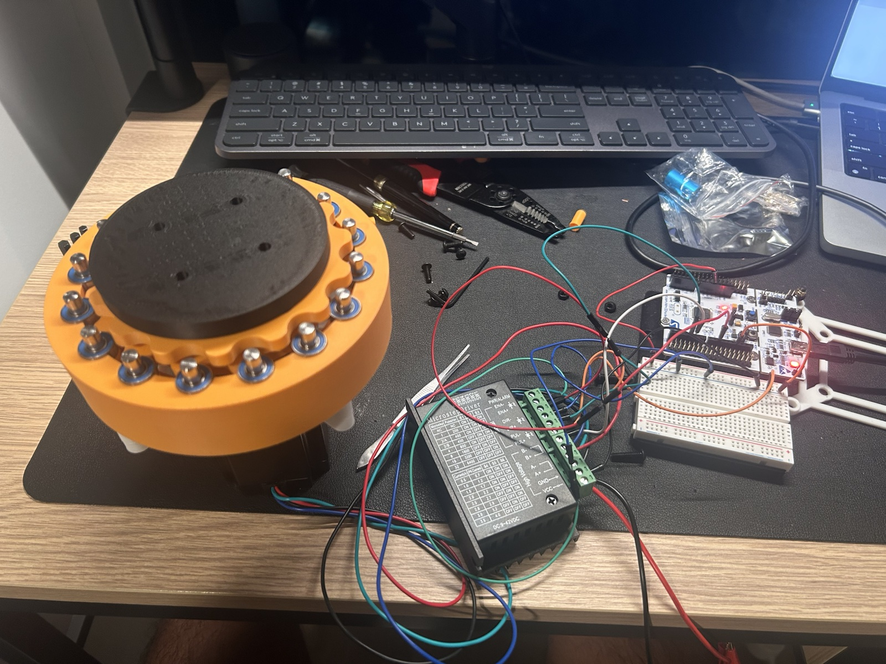
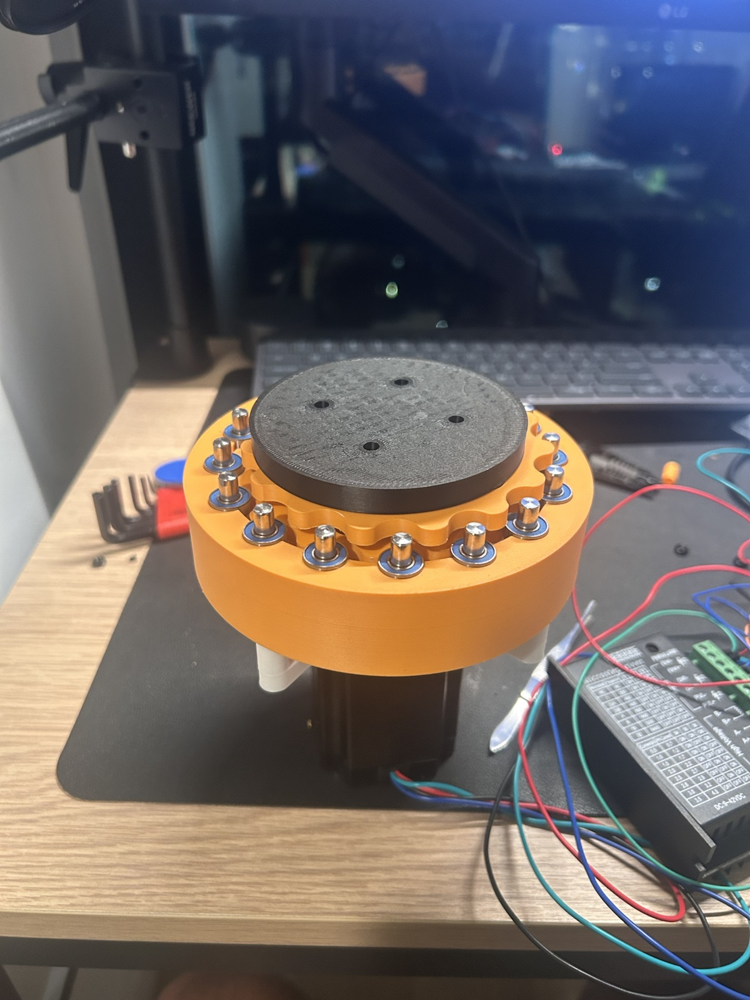

Hero Section
Cycloidal Actuator
Designing a Compact, High-Reduction Drive System for Robotics
This project explores the design and prototyping of a 3D-printed cycloidal actuator intended for robotic joint applications.
The goal was to create a compact, high-torque, low-backlash transmission system capable of significant reduction ratios while maintaining structural rigidity and manufacturability.

Why Cycloidal Drives?
Robotic joints in humanoid systems and industrial manipulators require high torque density in constrained package volume. Conventional spur and planetary stages are practical, but backlash accumulation and tooth contact behavior can limit precision for dynamic motion control.
Harmonic drives offer strong precision characteristics, but they are often costly and mechanically complex for early-stage student prototyping. Cycloidal drives present an effective alternative with high reduction in compact space, high shock load capacity, reduced backlash potential, and fewer failure-prone teeth under repeated load cycling.
Design Objectives
- Achieve ~15:1 reduction ratio (16 rollers / 15 lobes configuration)
- Compact form factor (desktop-scale prototype)
- Compatible with NEMA 17 stepper motor (initial version)
- Designed for upgrade to NEMA 23 in future iteration
- Incorporate real steel roller pins + bearings
- Fully parametric CAD model for ratio adjustments
- Optimized for 3D printing tolerances
The Reduction Mathematics
Cycloidal reduction behavior is governed by the relationship between the number of outer ring rollers and the number of cycloidal lobes on the disk profile. A one-count difference between these features generates a large relative speed reduction.
Reduction = (Number of Rollers - Number of Lobes)
In this prototype, 16 rollers engage a 15-lobe disk, producing a 15:1 reduction characteristic. The eccentric input shaft introduces an offset orbit that drives the cycloidal disk through a controlled wobble motion; this kinematic profile is then converted to a reduced-speed, amplified-torque output through drive pin coupling.
Mechanical Architecture
Core Components
- Input shaft with eccentric offset
- Cycloidal disk (parametrically generated)
- Fixed ring of roller pins
- Output shaft with drive pins
- Internal needle / radial bearings
- Housing structure
Power Flow
Motor input rotates the eccentric shaft at high speed and low torque. The eccentricity drives orbital motion of the cycloidal disk against the fixed roller ring. Output pins capture the relative disk motion and transfer reduced rotational speed with increased torque to the actuator output shaft.

Motor Selection & Control
Development started with a NEMA 17 stepper to accelerate prototyping and reduce integration risk during early mechanical validation. The architecture is intentionally sized with an upgrade path to NEMA 23 when higher continuous torque becomes necessary.
Driver tradeoffs were evaluated between TMC2209-class drivers (smoother motion, quieter stepping, finer current control) and TB6600-class drivers (higher current headroom and robust external driver packaging). Selection depends on torque demand, thermal budget, and desired motion quality.
V = IR + Ke\omega
This relationship frames actuator behavior: as speed increases, back EMF term Ke\omega reduces effective current margin, while stall torque is highest near zero speed where back EMF is minimal.
Parametric CAD Development
The actuator was developed in Fusion 360 using a custom parametric workflow with script-assisted geometry generation for cycloidal curves. The model allows rapid variation of key drivetrain dimensions without rebuilding the assembly from scratch.
- Number of lobes
- Eccentricity
- Roller diameter
- Bearing outer diameter
- Disk thickness
- Tolerance compensation for FDM printing
Iteration followed a print-fit-adjust loop: generate geometry, print critical interfaces, measure fit and backlash, then update parameters to converge on manufacturable tolerances.
Key Engineering Challenges
- Bearing press-fit tolerances, especially around 13 mm OD interfaces.
- Balancing roller hole sizing against friction and rotational smoothness.
- Maintaining eccentric shaft concentric alignment through assembly stack-up.
- Reducing backlash while preserving low-friction operation.
- Maintaining structural rigidity under load and transient shock.
- Managing FDM print anisotropy and layer-direction strength limits.
These constraints were treated as coupled failure-mode risks rather than isolated issues, guiding both geometry updates and material/print-orientation decisions.
Testing & Performance Observations
Current prototype testing is qualitative and focused on motion behavior. Rotation smoothness improved across revisions as bearing fit and roller clearances were tuned. The output stage shows clear torque amplification compared to direct motor drive, with remaining backlash primarily linked to printed interface tolerances.
Efficiency and vibration are being tracked through iterative runs; noise increases at higher motor speeds, indicating opportunities for tighter balance and improved pin/bearing alignment in future builds. Quantitative torque and backlash characterization is planned in the next validation phase.
Future Iterations
- CNC-machined metal housing
- Hardened steel rollers
- Custom output shaft spline
- Integrated encoder for closed-loop control
- Higher reduction ratio versions (30:1, 50:1)
- Application in robotic arm joint or quadruped prototype
What This Project Demonstrates
This project demonstrates a deep understanding of mechanical power transmission and how reduction-drive theory converts into physical actuator architecture.
It shows the ability to move from equations to parametric CAD, while considering manufacturability, tolerance control, and integration of motors, bearings, and structural components as a complete system.
The result aligns directly with robotics and automation development, where compact, reliable, and scalable actuation is a core engineering requirement.